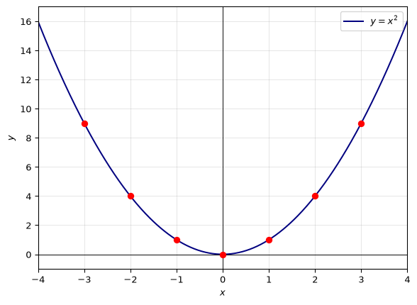
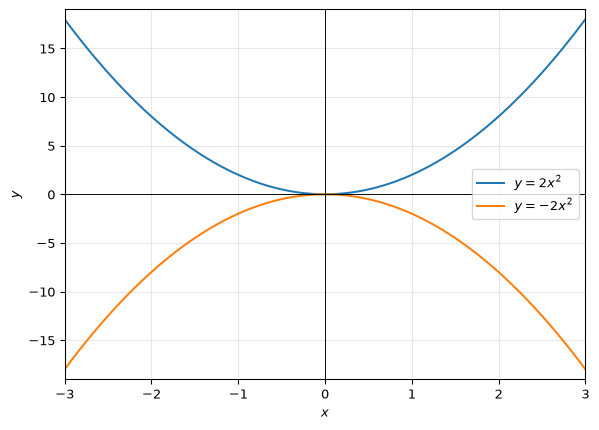
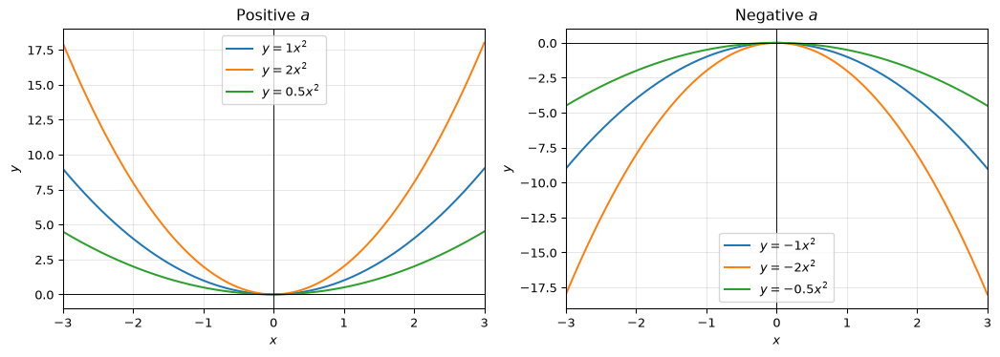
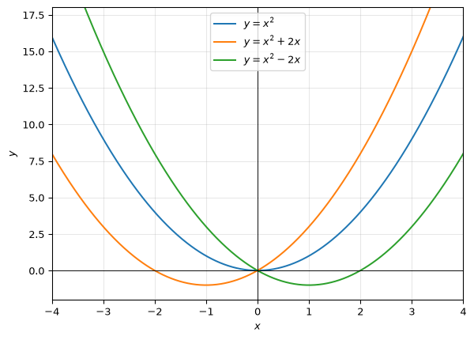
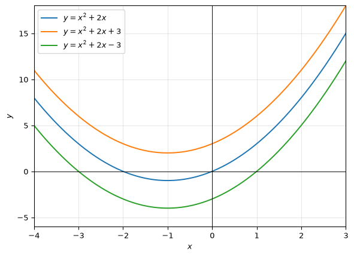
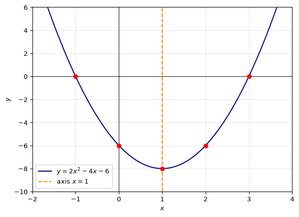

Quadratic Relationships: Exercises and Questions to Think About
Introduction
A quadratic relationship has the form
y=ax^2+bx+c,\qquad a\ne0.
The graph of a quadratic relationship is a parabola. In this activity, we will build the equation in stages. First we study y=ax^2, then examine the effect of adding bx, and finally investigate the effect of adding c.
The symbols a, b, and c play different roles. Understanding those roles is more useful than memorising a collection of graph shapes.
1. What does y=ax^2+bx+c represent?
Question
What does the equation
y=ax^2+bx+c
represent? What type of graph should we expect?
Answer
It represents a quadratic relationship between x and y. For each value of x, the equation gives one corresponding value of y. Because the highest power of x is 2, the relationship is quadratic rather than linear.
The graph is a parabola. Unlike a straight line, a parabola generally has a changing gradient. If we move equal distances along the x-axis, the changes in y are not usually equal.
The coefficient a must not be zero. If a=0, the equation becomes y=bx+c, which is linear.
Some important features are:
- The coefficient a determines whether the parabola opens upwards or downwards and how narrow or wide it is.
- The coefficient b affects the horizontal position of the axis of symmetry and therefore the position of the vertex.
- The constant c is the y-intercept because setting x=0 gives y=c.
The axis of symmetry is
x=-\frac{b}{2a},
and the vertex occurs at
\left(-\frac{b}{2a},\; f\left(-\frac{b}{2a}\right)\right).
We will see these effects gradually rather than treating the formula as a rule to memorise.
2. Begin with y=x^2
Question
Make a table of values for y=x^2, using positive, negative, and zero values of x. What do you notice?
Answer
A suitable table is:
| x | -3 | -2 | -1 | 0 | 1 | 2 | 3 |
|---|---|---|---|---|---|---|---|
| y=x^2 | 9 | 4 | 1 | 0 | 1 | 4 | 9 |
The values for opposite inputs are equal:
(-x)^2=x^2.
For example,
(-2)^2=2^2=4.
Therefore the graph is symmetric about the y-axis. The lowest point is (0,0), called the vertex. The graph opens upwards because squares are never negative.
3. What happens for positive and negative x?
Question
How do the graphs of y=ax^2 behave when x is positive or negative? Does the sign of x affect the sign of y?
Answer
The square x^2 is non-negative for both positive and negative values of x:
x^2\ge0.
Thus, when a>0,
y=ax^2\ge0.
The graph lies on or above the x-axis. The left and right sides are mirror images because
a(-x)^2=ax^2.
When a<0, multiplication by a negative number reverses the sign:
y=ax^2\le0.
The graph lies on or below the x-axis. It is still symmetric about the y-axis, but it opens downwards.
For example, y=2x^2 opens upwards and y=-2x^2 opens downwards.

4. How does the value of a affect the graph?
Question
Compare the graphs of
y=x^2,\qquad y=2x^2,\qquad y=\frac12x^2,
and then compare them with
y=-x^2,\qquad y=-2x^2,\qquad y=-\frac12x^2.
What does the magnitude and sign of a do?
Answer
The magnitude |a| controls the vertical stretch or compression.
- If |a|>1, the parabola is narrower and steeper than y=x^2.
- If 0<|a|<1, the parabola is wider and flatter than y=x^2.
- If a>0, it opens upwards.
- If a<0, it opens downwards.
All graphs of y=ax^2 have vertex (0,0) and axis of symmetry the y-axis.

5. What happens when we add bx?
Question
Starting with y=ax^2, compare it with
y=ax^2+bx.
What changes when a linear term is added? Compare, for example,
y=x^2,\qquad y=x^2+2x,\qquad y=x^2-2x.
Answer
Adding bx changes the position of the parabola. It can move the vertex away from the origin and changes the axis of symmetry. It does not, by itself, change the fact that the graph is a parabola.
For the examples,
y=x^2+2x=(x+1)^2-1,
so the vertex is (-1,-1) and the axis of symmetry is x=-1.
Similarly,
y=x^2-2x=(x-1)^2-1,
so the vertex is (1,-1) and the axis of symmetry is x=1.
The term bx also changes the value at negative and positive inputs differently. This is why the original symmetry about the y-axis is generally lost. The new symmetry is about the vertical line
x=-\frac{b}{2a}.

6. Can we rewrite the quadratic to see the movement?
Question
How can completing the square help us understand the effect of the term bx? Rewrite ax^2+bx in vertex form.
Answer
Factor out a:
ax^2+bx=a\left(x^2+\frac{b}{a}x\right).
Complete the square inside the brackets:
x^2+\frac{b}{a}x =\left(x+\frac{b}{2a}\right)^2-\frac{b^2}{4a^2}.
Therefore,
ax^2+bx =a\left(x+\frac{b}{2a}\right)^2-\frac{b^2}{4a}.
This shows that the vertex has moved horizontally to
x=-\frac{b}{2a},
and vertically to
y=-\frac{b^2}{4a}
when c=0.
For the complete quadratic,
ax^2+bx+c =a\left(x+\frac{b}{2a}\right)^2+c-\frac{b^2}{4a}.
This is the vertex form of the quadratic.
7. What happens when we add c?
Question
Starting with y=ax^2+bx, compare it with
y=ax^2+bx+c.
What does adding c do to the graph? Compare
y=x^2+2x, \qquad y=x^2+2x+3, \qquad y=x^2+2x-3.
Answer
Adding c shifts the graph vertically without changing its shape, width, direction, or axis of symmetry.
If
f(x)=ax^2+bx,
then
f(x)+c=ax^2+bx+c.
Every y-value increases by c. Therefore:
- If c>0, the graph moves upwards by c units.
- If c<0, the graph moves downwards by |c| units.
- The y-intercept is (0,c), since f(0)=c.
For the example,
x^2+2x=(x+1)^2-1,
so
x^2+2x+3=(x+1)^2+2,
and
x^2+2x-3=(x+1)^2-4.
All three have axis of symmetry x=-1, but their vertices are (-1,-1), (-1,2), and (-1,-4).

8. Can we identify the main features of y=ax^2+bx+c?
Question
For a general quadratic
y=ax^2+bx+c,
what can we determine directly from the coefficients?
Answer
The main features are as follows.
Direction of opening
- a>0: the parabola opens upwards and has a minimum point.
- a<0: the parabola opens downwards and has a maximum point.
Width
The size of |a| controls width:
- Larger |a|: narrower parabola.
- Smaller positive |a|: wider parabola.
Axis of symmetry
The axis is
x=-\frac{b}{2a}.
Vertex
Substitute the axis value into the equation:
\left(-\frac{b}{2a}, \;c-\frac{b^2}{4a}\right).
y-intercept
Set x=0:
y=c.
Thus the graph crosses the y-axis at (0,c).
x-intercepts
Set y=0:
ax^2+bx+c=0.
The number of real x-intercepts depends on the discriminant
\Delta=b^2-4ac.
- \Delta>0: two distinct real x-intercepts.
- \Delta=0: one repeated real x-intercept.
- \Delta<0: no real x-intercepts.
9. A complete worked example
Question
Analyse and sketch the graph of
y=2x^2-4x-6.
Find its direction of opening, axis of symmetry, vertex, intercepts, and a few points for plotting.
Answer
Here
a=2, \qquad b=-4, \qquad c=-6.
Since a=2>0, the parabola opens upwards. Since |a|=2>1, it is narrower than y=x^2.
The axis of symmetry is
x=-\frac{b}{2a}=-\frac{-4}{2(2)}=1.
Complete the square:
y=2x^2-4x-6 =2(x^2-2x)-6 =2(x-1)^2-8.
Therefore the vertex is
(1,-8).
For the y-intercept, set x=0:
y=-6,
so the point is (0,-6).
For the x-intercepts, set y=0:
2x^2-4x-6=0.
Divide by 2:
x^2-2x-3=0.
Factorise:
(x-3)(x+1)=0.
Hence
x=3\quad\text{or}\quad x=-1.
The x-intercepts are (3,0) and (-1,0). A useful table is:
| x | -1 | 0 | 1 | 2 | 3 |
|---|---|---|---|---|---|
| y | 0 | -6 | -8 | -6 | 0 |
The equal values at x=0 and x=2 illustrate symmetry about x=1.

10. Connecting the algebra and geometry
Question
How do the coefficients and the graph tell the same story in different languages?
Answer
The equation and the graph are two representations of the same relationship.
- The coefficient a determines the direction of opening and the width of the parabola.
- The coefficient b, together with a, determines the axis of symmetry x=-b/(2a).
- The constant c gives the point where the graph crosses the y-axis.
- Solving ax^2+bx+c=0 finds the points where the parabola crosses the x-axis.
- The discriminant tells us how many such crossings are possible.
The most useful progression is therefore:
y=ax^2 \quad\longrightarrow\quad y=ax^2+bx \quad\longrightarrow\quad y=ax^2+bx+c.
First, a determines the basic shape. Next, bx moves the vertex horizontally and changes the axis of symmetry. Finally, c shifts the entire graph vertically and determines the y-intercept.